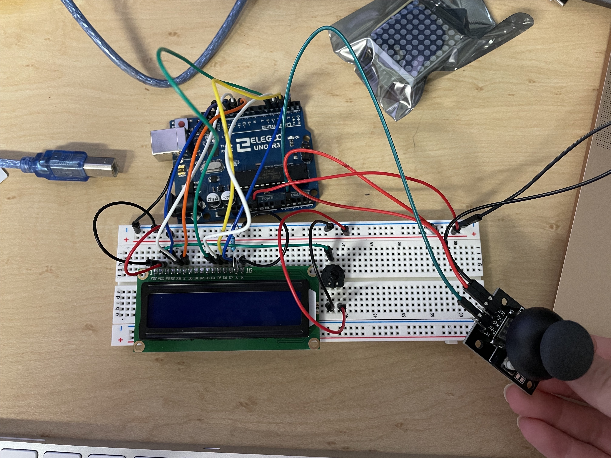
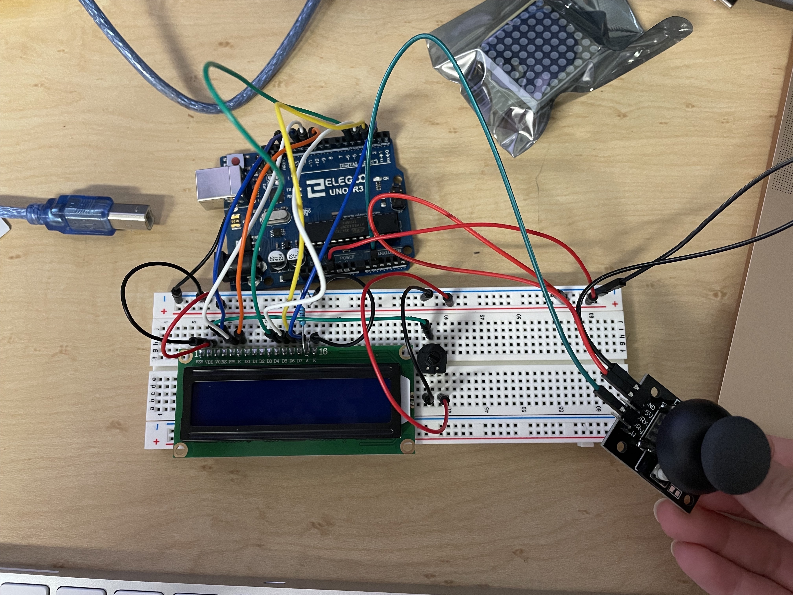

Michelle's Assignment 4!
This week, I really wanted to use my LCD screen and make some sort of game. I quickly realized that I didn't really have the knowledge to make a full fledged game -- So I decided to use a game that I found online!
The game code I followed is from this page: Arduino Running and Jumping Game
Basically, this game just has users avoid blocks by jumping and avoiding them. Because I used code for the game I found online, there's a few coding logistics and ideas that I'm not 100% certain of. But I was able to understand how the game functions overall!
From this original game code, I modified it to use a joystick instead of a button. I wanted to use a joystick so that users could use their hand to go into a motion that replicates what the character is doing on the screen.
Here is the schematics of this circuit board.
 

I used a 220 Ohm resistor for the LCD screen and used a potentiometer to vary the screen brightness.
The arduino code is below:
#include
#define PIN_BUTTON A1
#define PIN_AUTOPLAY 1
#define PIN_READWRITE 11
#define PIN_CONTRAST 13
#define SPRITE_RUN1 1
#define SPRITE_RUN2 2
#define SPRITE_JUMP 3
#define SPRITE_JUMP_UPPER '.' //the head
#define SPRITE_JUMP_LOWER 4
#define SPRITE_TERRAIN_EMPTY ' '
#define SPRITE_TERRAIN_SOLID 5
#define SPRITE_TERRAIN_SOLID_RIGHT 6
#define SPRITE_TERRAIN_SOLID_LEFT 7
#define HERO_HORIZONTAL_POSITION 1 //horizontal position of hero on screen
#define TERRAIN_WIDTH 16
#define TERRAIN_EMPTY 0
#define TERRAIN_LOWER_BLOCK 1
#define TERRAIN_UPPER_BLOCK 2
#define HERO_POSITION_OFF 0 // Hero is invisible
#define HERO_POSITION_RUN_LOWER_1 1 // Hero is running on lower row (pose 1)
#define HERO_POSITION_RUN_LOWER_2 2 //(pose 2)
#define HERO_POSITION_JUMP_1 3 // Starting a jump
#define HERO_POSITION_JUMP_2 4 // Half-way up
#define HERO_POSITION_JUMP_3 5 // Jump is on upper row
#define HERO_POSITION_JUMP_4 6 // Jump is on upper row
#define HERO_POSITION_JUMP_5 7 // Jump is on upper row
#define HERO_POSITION_JUMP_6 8 // Jump is on upper row
#define HERO_POSITION_JUMP_7 9 // Half-way down
#define HERO_POSITION_JUMP_8 10 // About to land
#define HERO_POSITION_RUN_UPPER_1 11 // Hero is running on upper row (pose 1)
#define HERO_POSITION_RUN_UPPER_2 12 // (pose 2)
LiquidCrystal lcd(12, 10, 5, 4, 3, 2);
static char terrainUpper[TERRAIN_WIDTH + 1];
static char terrainLower[TERRAIN_WIDTH + 1];
static bool buttonPushed = false;
void initializeGraphics(){
static byte graphics[] = {
// Run position 1
B01100,
B01100,
B00000,
B01110,
B11100,
B01100,
B11010,
B10011,
// Run position 2
B01100,
B01100,
B00000,
B01100,
B01100,
B01100,
B01100,
B01110,
// Jump
B01100,
B01100,
B00000,
B11110,
B01101,
B11111,
B10000,
B00000,
// Jump lower
B11110,
B01101,
B11111,
B10000,
B00000,
B00000,
B00000,
B00000,
// Ground
B11111,
B11111,
B11111,
B11111,
B11111,
B11111,
B11111,
B11111,
// Ground right
B00011,
B00011,
B00011,
B00011,
B00011,
B00011,
B00011,
B00011,
// Ground left
B11000,
B11000,
B11000,
B11000,
B11000,
B11000,
B11000,
B11000,
};
int i;
// Skip using character 0, this allows lcd.print() to be used to
// quickly draw multiple characters
for (i = 0; i < 7; ++i) {
lcd.createChar(i + 1, &graphics[i * 8]);
}
for (i = 0; i < TERRAIN_WIDTH; ++i) {
terrainUpper[i] = SPRITE_TERRAIN_EMPTY;
terrainLower[i] = SPRITE_TERRAIN_EMPTY;
}
}
// Slide the terrain to the left in half-character increments
void advanceTerrain(char* terrain, byte newTerrain) {
for (int i = 0; i < TERRAIN_WIDTH; ++i) {
char current = terrain[i];
char next = (i == TERRAIN_WIDTH-1) ? newTerrain : terrain[i+1];
switch (current){
case SPRITE_TERRAIN_EMPTY:
terrain[i] = (next == SPRITE_TERRAIN_SOLID) ?
SPRITE_TERRAIN_SOLID_RIGHT : SPRITE_TERRAIN_EMPTY;
break;
case SPRITE_TERRAIN_SOLID:
terrain[i] = (next == SPRITE_TERRAIN_EMPTY) ?
SPRITE_TERRAIN_SOLID_LEFT : SPRITE_TERRAIN_SOLID;
break;
case SPRITE_TERRAIN_SOLID_RIGHT:
terrain[i] = SPRITE_TERRAIN_SOLID;
break;
case SPRITE_TERRAIN_SOLID_LEFT:
terrain[i] = SPRITE_TERRAIN_EMPTY;
break;
}
}
}
// code for the character's position and terrain position. I got this code from the link I stated above!
bool drawHero(byte position, char* terrainUpper, char*
terrainLower, unsigned int score) {
bool collide = false;
char upperSave = terrainUpper[HERO_HORIZONTAL_POSITION];
char lowerSave = terrainLower[HERO_HORIZONTAL_POSITION];
byte upper, lower;
switch (position) {
case HERO_POSITION_OFF:
upper = lower = SPRITE_TERRAIN_EMPTY;
break;
case HERO_POSITION_RUN_LOWER_1:
upper = SPRITE_TERRAIN_EMPTY;
lower = SPRITE_RUN1;
break;
case HERO_POSITION_RUN_LOWER_2:
upper = SPRITE_TERRAIN_EMPTY;
lower = SPRITE_RUN2;
break;
case HERO_POSITION_JUMP_1:
case HERO_POSITION_JUMP_8:
upper = SPRITE_TERRAIN_EMPTY;
lower = SPRITE_JUMP;
break;
case HERO_POSITION_JUMP_2:
case HERO_POSITION_JUMP_7:
upper = SPRITE_JUMP_UPPER;
lower = SPRITE_JUMP_LOWER;
break;
case HERO_POSITION_JUMP_3:
case HERO_POSITION_JUMP_4:
case HERO_POSITION_JUMP_5:
case HERO_POSITION_JUMP_6:
upper = SPRITE_JUMP;
lower = SPRITE_TERRAIN_EMPTY;
break;
case HERO_POSITION_RUN_UPPER_1:
upper = SPRITE_RUN1;
lower = SPRITE_TERRAIN_EMPTY;
break;
case HERO_POSITION_RUN_UPPER_2:
upper = SPRITE_RUN2;
lower = SPRITE_TERRAIN_EMPTY;
break;
}
if (upper != ' ') {
terrainUpper[HERO_HORIZONTAL_POSITION] = upper;
collide = (upperSave == SPRITE_TERRAIN_EMPTY) ? false : true;
}
if (lower != ' ') {
terrainLower[HERO_HORIZONTAL_POSITION] = lower;
collide |= (lowerSave == SPRITE_TERRAIN_EMPTY) ? false : true;
}
byte digits = (score > 9999) ? 5 : (score > 999) ? 4 : (score > 99) ? 3 : (score > 9) ? 2 : 1;
// Draw the scene
terrainUpper[TERRAIN_WIDTH] = '\0';
terrainLower[TERRAIN_WIDTH] = '\0';
char temp = terrainUpper[16-digits];
terrainUpper[16-digits] = '\0';
lcd.setCursor(0,0);
lcd.print(terrainUpper);
terrainUpper[16-digits] = temp;
lcd.setCursor(0,1);
lcd.print(terrainLower);
lcd.setCursor(16 - digits,0);
lcd.print(score);
terrainUpper[HERO_HORIZONTAL_POSITION] = upperSave;
terrainLower[HERO_HORIZONTAL_POSITION] = lowerSave;
return collide;
}
int JUMP_BUTTON = 0; // intiating Jump Button
void setup() {
//setting pins to OUTPUT and INPUT based on their usage
Serial.begin(9600);
pinMode(PIN_BUTTON, INPUT); // input for the joystick VRy
pinMode(PIN_READWRITE, OUTPUT);
digitalWrite(PIN_READWRITE, LOW);
pinMode(PIN_CONTRAST, OUTPUT);
digitalWrite(PIN_CONTRAST, LOW);
pinMode(PIN_AUTOPLAY, OUTPUT);
digitalWrite(PIN_AUTOPLAY, HIGH);
initializeGraphics();
//beginning the LCD screen
lcd.begin(16, 2);
}
void loop() {
// store the output from reading Pin Button into Jump Button
JUMP_BUTTON = analogRead(PIN_BUTTON);
// gets the graphics ready for the game, including the characters and the terrain
static byte heroPos = HERO_POSITION_RUN_LOWER_1;
static byte newTerrainType = TERRAIN_EMPTY;
static byte newTerrainDuration = 1;
static bool playing = false;
static bool blink = false;
static unsigned int distance = 0;
// at the start of the game, the player gets a "start" on the LCD screen, and if the user pushes up on the joystick it starts moving
if (!playing) {
drawHero((blink) ? HERO_POSITION_OFF : heroPos, terrainUpper,
terrainLower, distance >> 3);
if (blink) {
lcd.setCursor(0,0);
lcd.print("Start!");
}
delay(250);
blink = !blink;
// The value 200 for the jumping action was determined by a series of test calibrations, in which I clicked upwards on the joystick
// and looked at the values it gave me. After numerous tests, I decided anywhere in the range 0 to 200 would be suffient for the jumping motion.
if (JUMP_BUTTON <= 200) {
initializeGraphics();
heroPos = HERO_POSITION_RUN_LOWER_1;
playing = true;
buttonPushed = false;
distance = 0;
}
return; }
// Shift the terrain to the left
advanceTerrain(terrainLower, newTerrainType ==
TERRAIN_LOWER_BLOCK ? SPRITE_TERRAIN_SOLID :
SPRITE_TERRAIN_EMPTY);
advanceTerrain(terrainUpper, newTerrainType ==
TERRAIN_UPPER_BLOCK ? SPRITE_TERRAIN_SOLID :
SPRITE_TERRAIN_EMPTY);
// Make new terrain to enter on the right
if (--newTerrainDuration == 0) {
if (newTerrainType == TERRAIN_EMPTY) {
newTerrainType = (random(3) == 0) ? TERRAIN_UPPER_BLOCK :
TERRAIN_LOWER_BLOCK;
newTerrainDuration = 2 + random(10);
} else {
newTerrainType = TERRAIN_EMPTY;
newTerrainDuration = 10 + random(10);
}
}
// if Jump button has a value of less than 200, hero jumps upwards
if (JUMP_BUTTON <= 200) {
if (heroPos <= HERO_POSITION_RUN_LOWER_2) heroPos =
HERO_POSITION_JUMP_1;
}
// if the character hits a terrain, they die and have to start over
if (drawHero(heroPos, terrainUpper, terrainLower, distance >> 3)) {
playing = false;
} else {
if (heroPos == HERO_POSITION_RUN_LOWER_2 || heroPos ==
HERO_POSITION_JUMP_8) {
heroPos = HERO_POSITION_RUN_LOWER_1;
} else if ((heroPos >= HERO_POSITION_JUMP_3 && heroPos <=
HERO_POSITION_JUMP_5) && terrainLower[HERO_HORIZONTAL_POSITION] != SPRITE_TERRAIN_EMPTY) {
heroPos = HERO_POSITION_RUN_UPPER_1;
} else if (heroPos >= HERO_POSITION_RUN_UPPER_1 &&
terrainLower[HERO_HORIZONTAL_POSITION] == SPRITE_TERRAIN_EMPTY) {
heroPos = HERO_POSITION_JUMP_5;
} else if (heroPos == HERO_POSITION_RUN_UPPER_2) {
heroPos = HERO_POSITION_RUN_UPPER_1;
} else {
++heroPos;
}
++distance;
digitalWrite(PIN_AUTOPLAY, terrainLower[HERO_HORIZONTAL_POSITION + 2] == SPRITE_TERRAIN_EMPTY
? HIGH : LOW);
}
delay(100);
}
After some configuring, this is the final product! I am really happy with how it turned out and had fun working on it.